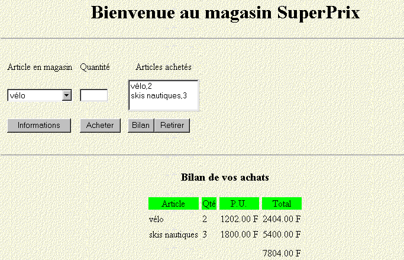

6. إدارة قواعد البيانات باستخدام واجهة برمجة تطبيقات JDBC
6.1. نظرة عامة
هناك العديد من قواعد البيانات في السوق. لتوحيد الوصول إلى قواعد البيانات في نظام MS Windows، طورت Microsoft واجهة تسمى ODBC (Open DataBase Connectivity). تخفي هذه الطبقة الميزات الخاصة بكل قاعدة بيانات خلف واجهة قياسية. هناك العديد من برامج تشغيل ODBC المتاحة في نظام MS Windows والتي تسهل الوصول إلى قواعد البيانات. فيما يلي، على سبيل المثال، قائمة ببرامج تشغيل ODBC المثبتة على جهاز يعمل بنظام Win95:

يمكن لأي تطبيق يعتمد على برامج التشغيل هذه استخدام أي من قواعد البيانات المذكورة أعلاه دون الحاجة إلى تعديل.

ولتمكين تطبيقات Java من الاستفادة أيضًا من واجهة ODBC، أنشأت شركة Sun واجهة JDBC (Java Database Connectivity)، التي تعمل كوسيط بين تطبيق Java وواجهة ODBC:

6.2. الخطوات الرئيسية في عمليات قاعدة البيانات
6.2.1. مقدمة
في تطبيق Java يستخدم قاعدة بيانات مع واجهة JDBC، تتضمن العملية عمومًا الخطوات التالية:
- الاتصال بقاعدة البيانات
- إرسال استعلامات SQL إلى قاعدة البيانات
- استلام ومعالجة نتائج هذه الاستعلامات
- إغلاق الاتصال
يتم تنفيذ الخطوتين 2 و 3 بشكل متكرر، ولا يتم إغلاق الاتصال إلا في نهاية عمليات قاعدة البيانات. هذا نمط قياسي نسبيًا قد تكون على دراية به إذا كنت قد استخدمت قاعدة بيانات تفاعلية من قبل. سنفصل كل خطوة من هذه الخطوات باستخدام مثال. سنأخذ قاعدة بيانات Access باسم ARTICLES ذات البنية التالية:
name | النوع |
الرمز | رمز العنصر المكون من 4 أحرف |
الاسم | اسمه (سلسلة) |
السعر | سعره (الفعلي) |
المخزون_الحالي | المخزون الحالي (عدد صحيح) |
الحد_الأدنى_للمخزون | الحد الأدنى للمخزون (عدد صحيح) الذي يجب تجديد المخزون عند انخفاضه إلى ما دونه |
يتم تعريف قاعدة بيانات ACCESS هذه كمصدر بيانات "مستخدم" في مدير قاعدة بيانات ODBC:


يتم تحديد خصائصها باستخدام زر "تكوين" على النحو التالي:

يتضمن هذا التكوين بشكل أساسي ربط قاعدة بيانات ARTICLES بملف Access articles.mdb المطابق لهذه القاعدة. وبمجرد الانتهاء من ذلك، تصبح قاعدة بيانات ARTICLES متاحة للتطبيقات التي تستخدم واجهة ODBC.
6.2.2. خطوة الاتصال
لاستخدام قاعدة بيانات، يجب على تطبيق Java أولاً إنشاء اتصال. ويتم ذلك باستخدام طريقة الفئة التالية:
حيث
DriverManager: فئة Java تحتوي على قائمة برامج التشغيل المتاحة للتطبيق
Connection: فئة Java تنشئ رابطًا بين التطبيق وقاعدة البيانات، والتي من خلالها سيرسل التطبيق استعلامات SQL إلى قاعدة البيانات ويتلقى النتائج
URL: الاسم الذي يحدد قاعدة البيانات. هذا الاسم مشابه لعناوين URL على الإنترنت. ولهذا السبب فهو جزء من فئة URL. ومع ذلك، لا علاقة للإنترنت بهذا الأمر على الإطلاق. يتخذ عنوان URL الشكل التالي:
**<bdi dir="ltr" class="odt-ltr-term">jdbc:driver</bdi>\_name:<bdi dir="ltr" class="odt-ltr-term">source</bdi>\_name;<bdi dir="ltr" class="odt-ltr-term">param</bdi>=<bdi dir="ltr" class="odt-ltr-term">val1</bdi>;<bdi dir="ltr" class="odt-ltr-term">param2</bdi>=<bdi dir="ltr" class="odt-ltr-term">val2</bdi>**
في أمثلةنا، حيث سنستخدم برامج تشغيل <bdi dir="ltr" class="odt-ltr-term">ODBC</bdi> فقط، يُسمى برنامج التشغيل **<bdi dir="ltr" class="odt-ltr-term">odbc</bdi>**. يتكون الجزء الثالث من عنوان <bdi dir="ltr" class="odt-ltr-term">URL</bdi> من اسم المصدر وأي معلمات. في أمثلةنا، ستكون هذه مصادر <bdi dir="ltr" class="odt-ltr-term">ODBC</bdi> معروفة للنظام. وبالتالي، سيكون عنوان <bdi dir="ltr" class="odt-ltr-term">URL</bdi> لمصدر بيانات *<bdi dir="ltr" class="odt-ltr-term">Articles</bdi>* المحدد سابقًا هو
**<bdi dir="ltr" class="odt-ltr-term">jdbc:odbc:Articles</bdi>**
id: معرف المستخدم (تسجيل الدخول)
mdp: كلمة مرور المستخدم
باختصار، يتصل البرنامج بقاعدة بيانات:
- يتم تحديده بواسطة اسم (URL)
- بمعلومات اعتماد المستخدم (المعرف، كلمة المرور)
إذا كانت هذه المعلمات الثلاثة صحيحة، وإذا كان برنامج التشغيل القادر على إنشاء الاتصال بين تطبيق Java وقاعدة البيانات المحددة موجودًا، يتم إنشاء اتصال بين تطبيق Java وقاعدة البيانات. يتم تمثيل هذا الاتصال في البرنامج بواسطة كائن Connection الذي ترجع فئة DriverManager. نظرًا لأن هذا الاتصال قد يفشل لأسباب مختلفة، فقد يرمي استثناءً. لذلك سنكتب:
Connection connexion=null;
URL base=...;
String id=...;
String mdp=...;
try{
connexion=DriverManager.getConnection(base,id,mdp);
} catch (Exception e){
// traiter l’exception
}
للاتصال بقاعدة بيانات، يجب أن يكون لديك برنامج التشغيل المناسب. في أمثلةنا، سيكون هذا هو برنامج تشغيل ODBC القادر على التعامل مع قاعدة البيانات المطلوبة. في حين يجب أن يكون برنامج التشغيل هذا متاحًا في قائمة برامج تشغيل ODBC على الجهاز، يجب أن يكون لديك أيضًا فئة Java التي ستتفاعل معه. للقيام بذلك، سيطلب التطبيق الفئة اللازمة على النحو التالي:
لا ترتبط فئة Class بأي شكل من الأشكال بواجهة JDBC. إنها فئة عامة لإدارة الفئات. تسمح طريقتها الثابتة forName بتحميل فئة ديناميكيًا، مما يجعل سماتها وطرقها الثابتة متاحة. تسمى الفئة التي تتفاعل مع برامج تشغيل MS Windows ODBC "sun.jdbc.odbc.JdbcOdbcDriver". لذلك سنكتب (قد ترمي الطريقة استثناءً):
try{
Class.forName(« sun.jdbc.odbc.JdbcOdbcDriver ») ;
} catch (Exception e){
// handle exception (non-existent class)
}
توجد الفئات المطلوبة لواجهة JDBC في حزمة java.sql. ولذلك، نكتب في بداية البرنامج:
فيما يلي برنامج يتيح لك الاتصال بقاعدة بيانات:
import java.sql.*;
import java.io.*;
// call: pg PILOTE URL UID MDP
// connects to the URL database using class JDBC PILOTE
// user UID is identified by password MDP
public class connexion1{
static String syntaxe="pg PILOTE URL UID MDP";
public static void main(String arg[]){
// check number of arguments
if(arg.length<2 || arg.length>4)
erreur(syntaxe,1);
// connection to base
Connection connect=null;
String uid="";
String mdp="";
if(arg.length>=3) uid=arg[2];
if(arg.length==4) mdp=arg[3];
try{
Class.forName(arg[0]);
connect=DriverManager.getConnection(arg[1],uid,mdp);
System.out.println("Connexion avec la base " + arg[1] + " établie");
} catch (Exception e){
erreur("Erreur " + e,2);
}
// closing the base
try{
connect.close();
System.out.println("Base " + arg[1] + " fermée");
} catch (Exception e){}
}// hand
public static void erreur(String msg, int exitCode){
System.err.println(msg);
System.exit(exitCode);
}
}// class
فيما يلي مثال على التنفيذ:
E:\data\java\jdbc\0>java connexion1 sun.jdbc.odbc.JdbcOdbcDriver jdbc:odbc:articles
Connexion avec la base jdbc:odbc:articles établie
Base jdbc:odbc:articles fermée
6.2.3. إرسال الاستعلامات إلى قاعدة البيانات
تسمح واجهة JDBC بإرسال استعلامات SQL إلى قاعدة البيانات المتصلة بتطبيق Java، بالإضافة إلى معالجة نتائج هذه الاستعلامات. SQL (لغة الاستعلام الهيكلية) هي لغة استعلام موحدة لقواعد البيانات العلائقية. هناك عدة أنواع من الاستعلامات:
- عبارات استعلام قاعدة البيانات (SELECT)
- استعلامات تحديث قاعدة البيانات (INSERT، DELETE، UPDATE)
- استعلامات لإنشاء/حذف الجداول (CREATE، DELETE)
نفترض هنا أن القارئ على دراية بأساسيات لغة SQL.
6.2.3.1. فئة Statement
لإرسال أي استعلام SQL إلى قاعدة بيانات، يجب أن يحتوي تطبيق Java على كائن من نوع Statement. سيخزن هذا الكائن، من بين أمور أخرى، نص الاستعلام. يرتبط هذا الكائن بالضرورة بالاتصال الحالي. لذلك، فإن إحدى طرق الاتصال القائمة هي التي تسمح لك بإنشاء كائنات Statement اللازمة لإصدار استعلامات SQL. إذا كان connection هو الكائن الذي يمثل الاتصال بقاعدة البيانات، يتم الحصول على كائن Statement على النحو التالي:
بمجرد الحصول على كائن Statement، يمكن تنفيذ استعلامات SQL. ويتم ذلك بطرق مختلفة اعتمادًا على ما إذا كان الاستعلام يهدف إلى استرداد البيانات أو تحديث قاعدة البيانات.
6.2.3.2. تنفيذ استعلام لاسترداد البيانات من قاعدة البيانات
عادةً ما يكون الاستعلام من النوع التالي:
الكلمات الرئيسية في السطر الأول هي فقط المطلوبة؛ أما البقية فهي اختيارية. وهناك كلمات رئيسية أخرى غير موضحة هنا.
- يتم إجراء عملية ربط مع جميع الجداول المدرجة بعد الكلمة الرئيسية `FROM`
- يتم الاحتفاظ فقط بالأعمدة التي تلي الكلمة الرئيسية `select`
- يتم الاحتفاظ فقط بالصفوف التي تستوفي شرط الكلمة الرئيسية `where`
- تشكل الصفوف الناتجة، المرتبة وفقًا للتعبير الوارد في الكلمة الرئيسية `ORDER BY`، نتيجة الاستعلام.
نتيجة <bdi dir="ltr" class="odt-ltr-term">SELECT</bdi> هي جدول. إذا أخذنا في الاعتبار جدول <bdi dir="ltr" class="odt-ltr-term">ARTICLES</bdi> السابق وأردنا الحصول على أسماء العناصر التي يقل مخزونها الحالي عن الحد الأدنى، فسنكتب: <bdi dir="ltr" class="odt-ltr-term">SELECT name FROM articles WHERE current</bdi>\_stock < <bdi dir="ltr" class="odt-ltr-term">min</bdi>\_stock*. وإذا أردنا فرزها أبجديًا حسب الاسم، فسنكتب: select name from articles where current_stock < minimum_stock order by name*
لتنفيذ هذا النوع من الاستعلامات، توفر فئة Statement طريقة executeQuery:
حيث query هو نص استعلام SELECT المراد تنفيذه.
وبالتالي، إذا
- كان connection هو الكائن الذي يمثل الاتصال بقاعدة البيانات
- Statement s = connection.createStatement() ينشئ كائن Statement المطلوب لتنفيذ استعلامات SQL
- تنفيذ الأمر ResultSet rs = s.executeQuery("select name from articles where current_stock < minimum_stock") يؤدي إلى تنفيذ استعلام SELECT وتعيين صفوف نتائج الاستعلام إلى كائن من نوع ResultSet.
6.2.3.3. فئة ResultSet: نتيجة استعلام SELECT
يمثل كائن ResultSet جدولًا، أي مجموعة من الصفوف والأعمدة. في أي وقت معين، لا يمكن الوصول إلا إلى صف واحد من الجدول، يُعرف بالصف الحالي. عند الإنشاء الأولي لـ ResultSet، يكون الصف الحالي هو الصف رقم 1 إذا لم يكن ResultSet فارغًا. للانتقال إلى الصف التالي، توفر فئة ResultSet الطريقة التالية:
تحاول هذه الطريقة الانتقال إلى الصف التالي في ResultSet وتُرجع true في حالة النجاح، و false في حالة الفشل. في حالة النجاح، يصبح الصف التالي هو الصف الحالي الجديد. يتم فقدان الصف السابق ولا يمكن استرداده. يحتوي جدول ResultSet على الأعمدة col1 و col2 و... للوصول إلى الحقول المختلفة للصف الحالي، تتوفر الطرق التالية:
لاسترداد حقل "coli" من الصف الحالي. يشير Type إلى نوع حقل coli. غالبًا ما تُستخدم طريقة getString على جميع الحقول، مما يسمح لك باسترداد محتوى الحقل كسلسلة. يمكنك بعد ذلك تحويلها إذا لزم الأمر. إذا كنت لا تعرف اسم العمود، يمكنك استخدام الطرق
حيث i هو مؤشر العمود المطلوب (i>=1).
6.2.3.4. مثال أول
فيما يلي برنامج يعرض محتويات قاعدة البيانات ARTICLES التي تم إنشاؤها سابقًا:
import java.sql.*;
import java.io.*;
// displays the contents of a ARTICLES system database
public class articles1{
static final String DB="ARTICLES"; // database to exploit
public static void main(String arg[]){
Connection connect=null; // connection to base
Statement S=null; // purpose of queries
ResultSet RS=null; // query result table
try{
// base connection
Class.forName("sun.jdbc.odbc.JdbcOdbcDriver");
connect=DriverManager.getConnection("jdbc:odbc:"+DB,"","");
System.out.println("Connexion avec la base " + DB + " établie");
// creation of a Statement object
S=connect.createStatement();
// execute a select query
RS=S.executeQuery("select * from " + DB);
// using the results table
while(RS.next()){ // as long as there's a line to operate
// it is displayed on screen
System.out.println(RS.getString("code")+","+
RS.getString("nom")+","+
RS.getString("prix")+","+
RS.getString("stock_actu")+","+
RS.getString("stock_mini"));
}// next line
} catch (Exception e){
erreur("Erreur " + e,2);
}
// closing the base
try{
connect.close();
System.out.println("Base " + DB + " fermée");
} catch (Exception e){}
}// hand
public static void erreur(String msg, int exitCode){
System.err.println(msg);
System.exit(exitCode);
}
}// class
والنتائج هي كما يلي:
Connexion avec la base ARTICLES établie
a300,vélo,1202,30,2
d600,arc,5000,10,2
d800,canoé,1502,12,6
x123,fusil,3000,10,2
s345,skis nautiques,1800,3,2
f450,essai3,3,3,3
f807,cachalot,200000,0,0
z400,léopard,500000,1,1
g457,panthère,800000,1,1
Base ARTICLES fermée
6.2.3.5. فئة ResultSetMetadata
في المثال السابق، نعرف أسماء أعمدة ResultSet. إذا لم نكن نعرفها، فلن نتمكن من استخدام طريقة getType(column_name). بدلاً من ذلك، نستخدم getType(column_number). ومع ذلك، للحصول على جميع الأعمدة، سنحتاج إلى معرفة عدد الأعمدة الموجودة في ResultSet. لا توفر فئة ResultSet هذه المعلومات. بل إن فئة ResultSetMetaData هي التي توفرها. بشكل عام، توفر هذه الفئة معلومات حول بنية الجدول، أي طبيعة أعمدة الجدول.
نصل إلى المعلومات المتعلقة ببنية ResultSet عن طريق إنشاء مثيل لكائن ResultSetMetaData أولاً. إذا كان RS هو ResultSet، يتم الحصول على ResultSetMetaData المرتبط به عن طريق:
توجد طريقتان مفيدتان في فئة ResultSetMetaData:
- int getColumnCount()، التي تُرجع عدد الأعمدة في ResultSet
- String getColumnLabel(int i)، والتي تُرجع اسم العمود i في ResultSet (i >= 1)
6.2.3.6. مثال ثانٍ
عرض البرنامج السابق محتويات قاعدة بيانات ARTICLES. هنا، نكتب برنامجًا ينفذ أي استعلام SQL SELECT يكتبه المستخدم على لوحة المفاتيح على قاعدة بيانات ARTICLES.
import java.sql.*;
import java.io.*;
// displays the contents of a ARTICLES system database
public class sql1{
static final String DB="ARTICLES"; // database to exploit
public static void main(String arg[]){
Connection connect=null; // connection to base
Statement S=null; // purpose of queries
ResultSet RS=null; // query result table
String select; // query text SQL select
int nbColonnes; // no. of columns in ResultSet
// creation of a keyboard input stream
BufferedReader in=null;
try{
in=new BufferedReader(new InputStreamReader(System.in));
} catch(Exception e){
erreur("erreur lors de l'ouverture du flux clavier ("+e+")",3);
}
try{
// base connection
Class.forName("sun.jdbc.odbc.JdbcOdbcDriver");
connect=DriverManager.getConnection("jdbc:odbc:"+DB,"","");
System.out.println("Connexion avec la base " + DB + " établie");
// creation of a Statement object
S=connect.createStatement();
// execution loop for SQL requests typed on keyboard
System.out.print("Requête : ");
select=in.readLine();
while(!select.equals("fin")){
// query execution
RS=S.executeQuery(select);
// number of columns
nbColonnes=RS.getMetaData().getColumnCount();
// using the results table
System.out.println("Résultats obtenus\n\n");
while(RS.next()){ // as long as there's a line to operate
// it is displayed on screen
for(int i=1;i<nbColonnes;i++)
System.out.print(RS.getString(i)+",");
System.out.println(RS.getString(nbColonnes));
}// next line
// following request
System.out.print("Requête : ");
select=in.readLine();
}// while
} catch (Exception e){
erreur("Erreur " + e,2);
}
// closing the base and input stream
try{
connect.close();
System.out.println("Base " + DB + " fermée");
in.close();
} catch (Exception e){}
}// hand
public static void erreur(String msg, int exitCode){
System.err.println(msg);
System.exit(exitCode);
}
}// class
فيما يلي بعض النتائج التي تم التوصل إليها:
Connexion avec la base ARTICLES établie
Requête : select * from articles order by prix desc
Résultats obtenus
g457,panthère,800000,1,1
z400,léopard,500000,1,1
f807,cachalot,200000,0,0
d600,arc,5000,10,2
x123,fusil,3000,10,2
s345,skis nautiques,1800,3,2
d800,canoé,1502,12,6
a300,vélo,1202,30,2
f450,essai3,3,3,3
Requête : select nom, prix from articles where prix >10000 order by prix desc
Résultats obtenus
panthère,800000
léopard,500000
cachalot,200000
6.2.3.7. تنفيذ استعلام تحديث قاعدة البيانات
يُستخدم كائن Statement لتخزين استعلامات SQL. لم تعد الطريقة التي يستخدمها هذا الكائن لتنفيذ استعلامات تحديث SQL (INSERT، UPDATE، DELETE) هي طريقة executeQuery التي تمت مناقشتها سابقًا، بل أصبحت طريقة executeUpdate:
يكمن الاختلاف في النتيجة: في حين أن executeQuery كانت تُرجع مجموعة النتائج (ResultSet)، فإن executeUpdate تُرجع عدد الصفوف التي تأثرت بعملية التحديث.
6.2.3.8. مثال ثالث
سنعود إلى البرنامج السابق ونعدله قليلاً: أصبحت الاستعلامات التي يتم كتابتها على لوحة المفاتيح الآن استعلامات تحديث لقاعدة بيانات ARTICLES.
import java.sql.*;
import java.io.*;
// displays the contents of a ARTICLES system database
public class sql2{
static final String DB="ARTICLES"; // database to exploit
public static void main(String arg[]){
Connection connect=null; // connection to base
Statement S=null; // purpose of queries
ResultSet RS=null; // query result table
String sqlUpdate; // text of SQL update request
int nbLignes; // no. of lines affected by an update
// creation of a keyboard input stream
BufferedReader in=null;
try{
in=new BufferedReader(new InputStreamReader(System.in));
} catch(Exception e){
erreur("erreur lors de l'ouverture du flux clavier ("+e+")",3);
}
try{
// base connection
Class.forName("sun.jdbc.odbc.JdbcOdbcDriver");
connect=DriverManager.getConnection("jdbc:odbc:"+DB,"","");
System.out.println("Connexion avec la base " + DB + " établie");
// creation of a Statement object
S=connect.createStatement();
// execution loop for SQL requests typed on keyboard
System.out.print("Requête : ");
sqlUpdate=in.readLine();
while(!sqlUpdate.equals("fin")){
// query execution
nbLignes=S.executeUpdate(sqlUpdate);
// follow-up
System.out.println(nbLignes + " ligne(s) ont été mises à jour");
// following request
System.out.print("Requête : ");
sqlUpdate=in.readLine();
}// while
} catch (Exception e){
erreur("Erreur " + e,2);
}
// closing the base and input stream
try{
// free up resources linked to the base
RS.close();
S.close();
connect.close();
System.out.println("Base " + DB + " fermée");
// keyboard flow closure
in.close();
} catch (Exception e){}
}// hand
public static void erreur(String msg, int exitCode){
System.err.println(msg);
System.exit(exitCode);
}
}// class
فيما يلي نتائج عدة عمليات تشغيل لبرنامجي sql1 وsql2:
قائمة الصفوف في قاعدة بيانات ARTICLES:
E:\data\java\jdbc\0>java sql1
Connexion avec la base ARTICLES établie
Requête : select nom,stock_actu from articles
Résultats obtenus
vélo,30
arc,10
canoé,12
fusil,10
skis nautiques,3
essai3,3
cachalot,0
léopard,1
panthère,1
نقوم بتعديل بعض الأسطر:
E:\data\java\jdbc\0>java sql2
Connexion avec la base ARTICLES établie
Requête : update articles set stock_actu=stock_actu+1 where stock_actu>10
2 ligne(s) ont été mises à jour
التحقق:
E:\data\java\jdbc\0>java sql1
Connexion avec la base ARTICLES établie
Requête : select nom,stock_actu from articles
Résultats obtenus
vélo,31
arc,10
canoé,13
fusil,10
skis nautiques,3
essai3,3
cachalot,0
léopard,1
panthère,1
أضف سطراً:
E:\data\java\jdbc\0>java sql2
Connexion avec la base ARTICLES établie
Requête : insert into articles (code,nom,prix,stock_actu,stock_mini) values ('x400','nouveau',200,20,10)
1 ligne(s) ont été mises à jour
التحقق:
E:\data\java\jdbc\0>java sql1
Connexion avec la base ARTICLES établie
Requ_te : select nom,stock_actu from articles
Résultats obtenus
vélo,31
arc,10
canoé,13
fusil,10
skis nautiques,3
essai3,3
cachalot,0
léopard,1
panthère,1
nouveau,20
حذف صف:
E:\data\java\jdbc\0>java sql2
Connexion avec la base ARTICLES établie
Requête : delete from articles where code='x400'
1 ligne(s) ont été mises à jour
Requête : fin
التحقق:
E:\data\java\jdbc\0>java sql1
Connexion avec la base ARTICLES établie
Requête : select nom,stock_actu from articles
Résultats obtenus
vélo,31
arc,10
cano_,13
fusil,10
skis nautiques,3
essai3,3
cachalot,0
léopard,1
panthère,1
6.2.3.9. تنفيذ أي استعلام SQL
يحتوي كائن Statement المطلوب لتنفيذ استعلامات SQL على طريقة execute قادرة على تنفيذ أي نوع من استعلامات SQL:
القيمة المرجعة هي القيمة المنطقية <bdi dir="ltr" class="odt-ltr-term">true</bdi> إذا أعاد الاستعلام <bdi dir="ltr" class="odt-ltr-term">ResultSet</bdi>* (<bdi dir="ltr" class="odt-ltr-term">executeQuery</bdi>*) ، و<bdi dir="ltr" class="odt-ltr-term">false</bdi> إذا أعاد رقمًا (<bdi dir="ltr" class="odt-ltr-term">executeUpdate</bdi>*). يمكن استرداد <bdi dir="ltr" class="odt-ltr-term">ResultSet</bdi> الناتج باستخدام طريقة <bdi dir="ltr" class="odt-ltr-term">getResultSet</bdi> ، وعدد الصفوف المحدثة باستخدام طريقة <bdi dir="ltr" class="odt-ltr-term">getUpdateCount</bdi>*. وبالتالي، سنكتب:
Statement S=...;
ResultSet RS=...;
int nbLignes;
String requête=...;
// exécution d’une requête SQL
if (S.execute(requête)){
// on a un resultset
RS=S.getResultSet();
// exploitation du ResultSet
...
} else {
// c’était une requête de mise à jour
nbLignes=S.getUpdateCount();
...
}
6.2.3.10. المثال الرابع
نأخذ المفهوم من البرنامجين sql1 و sql2 ونطبقه على برنامج sql3 الذي يمكنه الآن تنفيذ أي استعلام SQL يتم كتابته على لوحة المفاتيح. ولجعل البرنامج أكثر عمومية، يتم تمرير خصائص قاعدة البيانات المراد استخدامها كمعلمات إلى البرنامج.
import java.sql.*;
import java.io.*;
// call: pg PILOTE URL UID MDP
// connects to the URL database using class JDBC PILOTE
// user UID is identified by password MDP
public class sql3{
static String syntaxe="pg PILOTE URL UID MDP";
public static void main(String arg[]){
// check number of arguments
if(arg.length<2 || arg.length>4)
erreur(syntaxe,1);
// init connection parameters
Connection connect=null;
String uid="";
String mdp="";
if(arg.length>=3) uid=arg[2];
if(arg.length==4) mdp=arg[3];
// other data
Statement S=null; // purpose of queries
ResultSet RS=null; // result table of a query request
String sqlText; // text of query SQL to be executed
int nbLignes; // no. of lines affected by an update
int nbColonnes; // nb of columns in a ResultSet
// creation of a keyboard input stream
BufferedReader in=null;
try{
in=new BufferedReader(new InputStreamReader(System.in));
} catch(Exception e){
erreur("erreur lors de l'ouverture du flux clavier ("+e+")",3);
}
try{
// base connection
Class.forName(arg[0]);
connect=DriverManager.getConnection(arg[1],uid,mdp);
System.out.println("Connexion avec la base " + arg[1] + " établie");
// creation of a Statement object
S=connect.createStatement();
// execution loop for SQL requests typed on keyboard
System.out.print("Requête : ");
sqlText=in.readLine();
while(!sqlText.equals("fin")){
// query execution
try{
if(S.execute(sqlText)){
// we have obtained a ResultSet - we exploit it
RS=S.getResultSet();
// number of columns
nbColonnes=RS.getMetaData().getColumnCount();
// using the results table
System.out.println("\nRésultats obtenus\n-----------------\n");
while(RS.next()){ // as long as there's a line to operate
// it is displayed on screen
for(int i=1;i<nbColonnes;i++)
System.out.print(RS.getString(i)+",");
System.out.println(RS.getString(nbColonnes));
}// next line of ResultSet
} else {
// it was an update request
nbLignes=S.getUpdateCount();
// follow-up
System.out.println(nbLignes + " ligne(s) ont été mises à jour");
}//if
} catch (Exception e){
System.out.println("Erreur " +e);
}
// following request
System.out.print("\nNouvelle Requête : ");
sqlText=in.readLine();
}// while
} catch (Exception e){
erreur("Erreur " + e,2);
}
// closing the base and input stream
try{
// free up resources linked to the base
RS.close();
S.close();
connect.close();
System.out.println("Base " + arg[1] + " fermée");
// keyboard flow closure
in.close();
} catch (Exception e){}
}// hand
public static void erreur(String msg, int exitCode){
System.err.println(msg);
System.exit(exitCode);
}
}// class
نقوم بإنشاء ملف الاستعلام التالي:
select * from articles
update articles set stock_mini=stock_mini+5 where stock_mini<5
select nom,stock_mini from articles
insert into articles (code,nom,prix,stock_actu,stock_mini) values ('x400','nouveau',100,20,10)
select * from articles
delete from articles where code='x400'
select * from articles
fin
يتم تشغيل البرنامج على النحو التالي:
يقرأ البرنامج مدخلاته من ملف الاستعلامات ويكتب مخرجاته إلى ملف النتائج. النتائج التي تم الحصول عليها هي كما يلي:
Connexion avec la base jdbc:odbc:articles établie
Requête : (requete 1 du fichier des requetes : select * from articles)
Résultats obtenus
-----------------
a300,vélo,1202,31,3
d600,arc,5000,10,3
d800,canoé,1502,13,7
x123,fusil,3000,10,3
s345,skis nautiques,1800,3,3
f450,essai3,3,3,4
f807,cachalot,200000,0,1
z400,léopard,500000,1,2
g457,panthère,800000,1,2
Nouvelle Requête : (requete 2 du fichier des requetes : update articles set stock_mini=stock_mini+5 where stock_mini<5)
8 ligne(s) ont été mises à jour
Nouvelle Requête : (requete 3 du fichier des requetes : select nom,stock_mini from articles)
Résultats obtenus
-----------------
vélo,8
arc,8
canoé,7
fusil,8
skis nautiques,8
essai3,9
cachalot,6
léopard,7
panthère,7
Nouvelle Requête : (requete 4 du fichier des requetes : insert into articles (code,nom,prix,stock_actu,stock_mini) values ('x400','nouveau',100,20,10))
1 ligne(s) ont été mises à jour
Nouvelle Requête : (requete 5 du fichier des requetes : select * from articles)
Résultats obtenus
-----------------
a300,vélo,1202,31,8
d600,arc,5000,10,8
d800,canoé,1502,13,7
x123,fusil,3000,10,8
s345,skis nautiques,1800,3,8
f450,essai3,3,3,9
f807,cachalot,200000,0,6
z400,léopard,500000,1,7
g457,panthère,800000,1,7
x400,nouveau,100,20,10
Nouvelle Requête : (requete 6 du fichier des requêtes : delete from articles where code='x400')
1 ligne(s) ont été mises à jour
Nouvelle Requête : (requete 7 du fichier des requêtes : select * from articles)
Résultats obtenus
-----------------
a300,vélo,1202,31,8
d600,arc,5000,10,8
d800,canoé,1502,13,7
x123,fusil,3000,10,8
s345,skis nautiques,1800,3,8
f450,essai3,3,3,9
f807,cachalot,200000,0,6
z400,léopard,500000,1,7
g457,panthère,800000,1,7
6.3. حساب الضرائب باستخدام قاعدة بيانات
في المرة الأخيرة التي تناولنا فيها مشكلة حساب الضرائب، استخدمنا واجهة رسومية وتم تخزين البيانات في ملف. سنعيد النظر في هذه النسخة، مع افتراض أن البيانات موجودة في قاعدة بيانات ODBC-MySQL. MySQL هو نظام إدارة قواعد البيانات مفتوح المصدر يمكن استخدامه على منصات مختلفة، بما في ذلك Windows وLinux. باستخدام نظام إدارة قواعد البيانات هذا، تم إنشاء قاعدة بيانات باسم dbimpots، تحتوي على جدول واحد يسمى impots. يتم التحكم في الوصول إلى قاعدة البيانات بواسطة اسم مستخدم/كلمة مرور، وفي هذه الحالة admimpots/mdpimpots. توضح لقطة الشاشة كيفية استخدام قاعدة بيانات dbimpots مع MySQL:
C:\Program Files\EasyPHP\mysql\bin>mysql -u admimpots -p
Enter password: *********
Welcome to the MySQL monitor. Commands end with ; or \g.
Your MySQL connection id is 18 to server version: 3.23.49-max-nt
Type 'help;' or '\h' for help. Type '\c' to clear the buffer.
mysql> use dbimpots;
Database changed
mysql> show tables;
+--------------------+
| Tables_in_dbimpots |
+--------------------+
| impots |
+--------------------+
1 row in set (0.00 sec)
mysql> describe impots;
+---------+--------+------+-----+---------+-------+
| Field | Type | Null | Key | Default | Extra |
+---------+--------+------+-----+---------+-------+
| limites | double | YES | | NULL | |
| coeffR | double | YES | | NULL | |
| coeffN | double | YES | | NULL | |
+---------+--------+------+-----+---------+-------+
3 rows in set (0.02 sec)
mysql> select * from impots;
+---------+--------+---------+
| limites | coeffR | coeffN |
+---------+--------+---------+
| 12620 | 0 | 0 |
| 13190 | 0.05 | 631 |
| 15640 | 0.1 | 1290.5 |
| 24740 | 0.15 | 2072.5 |
| 31810 | 0.2 | 3309.5 |
| 39970 | 0.25 | 4900 |
| 48360 | 0.3 | 6898 |
| 55790 | 0.35 | 9316.5 |
| 92970 | 0.4 | 12106 |
| 127860 | 0.45 | 16754 |
| 151250 | 0.5 | 23147.5 |
| 172040 | 0.55 | 30710 |
| 195000 | 0.6 | 39312 |
| 0 | 0.65 | 49062 |
+---------+--------+---------+
14 rows in set (0.00 sec)
mysql>quit
الواجهة الرسومية للتطبيق هي كما يلي:

خضعت الواجهة الرسومية لبعض التغييرات:
لا. | النوع | الاسم | الدور |
1 | JTextField | txtConnection | سلسلة اتصال قاعدة بيانات ODBC |
2 | JScrollPane | JScrollPane1 | حاوية لمنطقة النص (Textarea) 3 |
3 | JTextArea | txtStatus | يعرض رسائل الحالة، بما في ذلك رسائل الخطأ |
سلسلة الاتصال التي تم إدخالها في (1) لها التنسيق التالي: DSN;login;password مع
هو اسم DSN لمصدر بيانات ODBC | |
هو هوية مستخدم لديه حق الوصول للقراءة إلى قاعدة البيانات | |
كلمة المرور الخاصة به |
تم إنشاء قاعدة بيانات dbimpots يدويًا باستخدام MySQL. يتم تحويلها إلى مصدر بيانات ODBC على النحو التالي:
- قم بتشغيل "مدير مصدر بيانات ODBC" 32 بت

- استخدم الزر [Add] لإضافة مصدر بيانات ODBC جديد

- حدد برنامج تشغيل MySQL وانقر على [Finish]

- يطلب برنامج تشغيل MySQL بعض المعلومات:
1 | اسم DSN الذي سيتم إعطاؤه لمصدر بيانات ODBC — يمكن أن يكون أي اسم |
2 | الجهاز الذي يعمل عليه نظام إدارة قواعد البيانات MySQL — هنا، localhost. تجدر الإشارة إلى أن قاعدة البيانات قد تكون قاعدة بيانات بعيدة. ولن تلاحظ التطبيقات المحلية التي تستخدم مصدر بيانات ODBC ذلك. وينطبق هذا بشكل خاص على تطبيق Java الخاص بنا. |
3 | قاعدة بيانات MySQL المراد استخدامها. MySQL هو نظام إدارة قواعد البيانات (DBMS) الذي يدير قواعد البيانات العلائقية، وهي مجموعات من الجداول المرتبطة ببعضها البعض من خلال علاقات. هنا، نحدد اسم قاعدة البيانات التي يتم إدارتها. |
4 | اسم المستخدم الذي لديه حقوق الوصول إلى قاعدة البيانات هذه |
5 | كلمة المرور الخاصة به |
بمجرد تحديد مصدر بيانات ODBC، يمكننا اختبار برنامجنا:
 |  |
دعونا نلقي نظرة على الكود الذي تم تعديله مقارنةً بالإصدار الرسومي الذي لا يحتوي على قاعدة بيانات. فيما يلي كود فئة *<bdi dir="ltr" class="odt-ltr-term">impots</bdi>* المستخدم حتى الآن:
// creation of an impots class
public class impots{
// data required for tax calculation
// come from an external source
private double[] limites, coeffR, coeffN;
// manufacturer
public impots(double[] LIMITES, double[] COEFFR, double[] COEFFN) throws Exception{
// check that the 3 arrays have the same size
boolean OK=LIMITES.length==COEFFR.length && LIMITES.length==COEFFN.length;
if (! OK) throw new Exception ("Les 3 tableaux fournis n'ont pas la même taille("+
LIMITES.length+","+COEFFR.length+","+COEFFN.length+")");
// it's good
this.limites=LIMITES;
this.coeffR=COEFFR;
this.coeffN=COEFFN;
}//manufacturer
// tAX CALCULATION
public long calculer(boolean marié, int nbEnfants, int salaire){
// calculating the number of shares
double nbParts;
if (marié) nbParts=(double)nbEnfants/2+2;
else nbParts=(double)nbEnfants/2+1;
if (nbEnfants>=3) nbParts+=0.5;
// calculation of taxable income & family quota
double revenu=0.72*salaire;
double QF=revenu/nbParts;
// tAX CALCULATION
limites[limites.length-1]=QF+1;
int i=0;
while(QF>limites[i]) i++;
// return result
return (long)(revenu*coeffR[i]-nbParts*coeffN[i]);
}//calculate
}//class
تقوم هذه الفئة بإنشاء المصفوفات الثلاثة limits و coeffR و coeffN من ثلاث مصفوفات يتم تمريرها كمعلمات إلى منشئها. وقد قررنا إضافة منشئ جديد يتيح لنا إنشاء المصفوفات الثلاث نفسها من قاعدة بيانات:
public impots(String dsnIMPOTS, String userIMPOTS, String mdpIMPOTS)
throws SQLException,ClassNotFoundException{
// dsnIMPOTS: DSN database name
// userIMPOTS, mdpIMPOTS: database login/password
في هذا المثال، قررنا عدم تنفيذ هذا المنشئ الجديد في فئة *<bdi dir="ltr" class="odt-ltr-term">impots</bdi>* بل في فئة مشتقة، وهي *<bdi dir="ltr" class="odt-ltr-term">impotsJDBC</bdi>*:
// imported packages
import java.sql.*;
import java.util.*;
public class impotsJDBC extends impots{
// addition of a constructor for building
// limit tables, coeffr, coeffn from table
// database taxes
public impotsJDBC(String dsnIMPOTS, String userIMPOTS, String mdpIMPOTS)
throws SQLException,ClassNotFoundException{
// dsnIMPOTS: DSN database name
// userIMPOTS, mdpIMPOTS: database login/password
// data tables
ArrayList aLimites=new ArrayList();
ArrayList aCoeffR=new ArrayList();
ArrayList aCoeffN=new ArrayList();
// connection to base
Class.forName("sun.jdbc.odbc.JdbcOdbcDriver");
Connection connect=DriverManager.getConnection("jdbc:odbc:"+dsnIMPOTS,userIMPOTS,mdpIMPOTS);
// creation of a Statement object
Statement S=connect.createStatement();
// select request
String select="select limites, coeffr, coeffn from impots";
// query execution
ResultSet RS=S.executeQuery(select);
while(RS.next()){
// running line operation
aLimites.add(RS.getString("limites"));
aCoeffR.add(RS.getString("coeffr"));
aCoeffN.add(RS.getString("coeffn"));
}// next line
// closing resources
RS.close();
S.close();
connect.close();
// data transfer to bounded arrays
int n=aLimites.size();
limites=new double[n];
coeffR=new double[n];
coeffN=new double[n];
for(int i=0;i<n;i++){
limites[i]=Double.parseDouble((String)aLimites.get(i));
coeffR[i]=Double.parseDouble((String)aCoeffR.get(i));
coeffN[i]=Double.parseDouble((String)aCoeffN.get(i));
}//for
}//manufacturer
}//class
يقوم المنشئ بقراءة محتويات جدول impots من قاعدة البيانات التي تم تمريرها إليه كمعلمات، ويملأ المصفوفات الثلاث: limites و coeffR و coeffN. وقد تحدث بعض الأخطاء. ولا يتعامل المنشئ معها، بل «يحيلها» إلى البرنامج المستدعي:
public impotsJDBC(String dsnIMPOTS, String userIMPOTS, String mdpIMPOTS)
throws SQLException,ClassNotFoundException{
إذا نظرنا عن كثب إلى الكود السابق، يمكننا أن نرى أن فئة impotsJDBC تستخدم مباشرة حقول limits و coeffR و coeffN الخاصة بفئتها الأساسية impots. وبما أن هذه الحقول مُعلنة على أنها خاصة:
فإن فئة impotsJDBC لا تملك وصولاً مباشراً إلى هذه الحقول. لذلك نقوم بإجراء تعديل أولي على الفئة الأساسية بكتابة:
تسمح السمة protected للفئات المشتقة من فئة impots بالوصول المباشر إلى الحقول المعلنة بهذه السمة. نحتاج إلى إجراء تعديل ثانٍ. يتم إعلان منشئ الفئة الفرعية impotsJDBC على النحو التالي:
public impotsJDBC(String dsnIMPOTS, String userIMPOTS, String mdpIMPOTS)
throws SQLException,ClassNotFoundException{
نعلم أنه قبل إنشاء كائن لفئة فرعية، يجب أولاً إنشاء كائن للفئة الأصلية. للقيام بذلك، يجب أن تستدعي منشئة الفئة الفرعية صراحةً منشئة الفئة الأصلية باستخدام عبارة super(....). هنا، لم يتم ذلك لأننا لا نستطيع تحديد أي منشئة من الفئة الأصلية يمكننا استدعاؤها. يوجد حاليًا منشئ واحد فقط، وهو غير مناسب. سيقوم المُجمع بعد ذلك بالبحث في الفئة الأم عن منشئ بدون معلمات يمكنه استدعاءه. لا يجد المُجمع منشئًا، وهذا يؤدي إلى حدوث خطأ في التجميع. لذلك نضيف منشئًا بدون معلمات إلى فئة impots الخاصة بنا:
نعلنها على أنها "محمية" بحيث لا يمكن استخدامها إلا من قبل الفئات الفرعية. يبدو هيكل فئة impots الآن كما يلي:
public class impots{
// data required for tax calculation
// come from an external source
protected double[] limites=null;
protected double[] coeffR=null;
protected double[] coeffN=null;
// empty builder
protected impots(){}
// manufacturer
public impots(double[] LIMITES, double[] COEFFR, double[] COEFFN) throws Exception{
...........
}//manufacturer
// tAX CALCULATION
public long calculer(boolean marié, int nbEnfants, int salaire){
.............
}//calculate
}//class
يصبح الإجراء الخاص بقائمة Initialize في تطبيقنا كما يلي:
void mnuInitialiser_actionPerformed(ActionEvent e) {
// retrieve the connection string
Pattern séparateur=Pattern.compile("\\s*;\\s*");
String[] champs=séparateur.split(txtConnexion.getText().trim());
// three fields are required
if(champs.length!=3){
// error
txtStatus.setText("Chaîne de connexion (DSN;uid;mdp) incorrecte");
// back to visual interface
txtConnexion.requestFocus();
return;
}//if
// load data
try{
// creation of impotsJDBC object
objImpots=new impotsJDBC(champs[0],champs[1],champs[2]);
// confirmation
txtStatus.setText("Données chargées");
// salary can be modified
txtSalaire.setEditable(true);
// no more chgt possible
mnuInitialiser.setEnabled(false);
txtConnexion.setEditable(false);
}catch(Exception ex){
// problem
txtStatus.setText("Erreur : " + ex.getMessage());
// end
return;
}//catch
}
بمجرد إنشاء الكائن objImpots، يصبح التطبيق مطابقًا للتطبيق الرسومي الذي تمت كتابته مسبقًا. ندعو القارئ إلى الرجوع إليه.
6.4. تمارين
6.4.1. التمرين 1
قم بتوفير واجهة رسومية لبرنامج sql3 السابق.
6.4.2. التمرين 2
لا يمكن لبرنامج Java الصغير الوصول إلى قاعدة البيانات إلا من خلال الخادم الذي تم تحميله منه. ونظرًا لأن البرنامج الصغير لا يملك حق الوصول إلى القرص الخاص بالجهاز الذي يعمل عليه، فلا يمكن أن تكون قاعدة البيانات موجودة على جهاز العميل الذي يستخدم البرنامج الصغير. وبالتالي، فإننا في الحالة التالية:

قد يكون الجهاز الذي يعمل عليه التطبيق الصغير، والخادم، والجهاز الذي يستضيف قاعدة البيانات ثلاثة أجهزة مختلفة. هنا، نفترض أن قاعدة البيانات موجودة على الخادم.
المشكلة 1
اكتب تطبيق الخادم التالي بلغة Java:
- يعمل تطبيق الخادم على منفذ يتم تمريره إليه كمعلمة
- عندما يتصل عميل، يرسل تطبيق الخادم الرسالة
- ثم يرسل العميل المعلمات اللازمة للاتصال بقاعدة البيانات والاستعلام الذي يريد تنفيذه بالصيغة التالية:
يتم فصل المعلمات بشرطة مائلة. المعلمات الأربع الأولى هي تلك الخاصة ببرنامج sql3 الموصوف في هذا الفصل.
- ثم يقوم تطبيق الخادم بإنشاء اتصال بقاعدة البيانات المحددة، والتي يجب أن تكون موجودة على نفس الجهاز الذي يوجد عليه الخادم، ويقوم بتنفيذ استعلام SQL عليها. يتم إرجاع النتائج إلى العميل بالتنسيق التالي:
...
إذا كانت النتيجة من استعلام Select، أو
لإرجاع عدد الصفوف المتأثرة باستعلام التحديث. في حالة حدوث خطأ في اتصال قاعدة البيانات أو خطأ في تنفيذ الاستعلام، يقوم التطبيق بإرجاع
- بمجرد تنفيذ الاستعلام، يقوم تطبيق الخادم بإغلاق الاتصال.
المشكلة 2
أنشئ تطبيق Java صغير يستعلم عن الخادم الموصوف أعلاه. يمكنك الاستلهام من الواجهة الرسومية في التمرين 1. ونظرًا لأن منفذ الخادم قد يختلف، فسيتم إدخاله عبر واجهة التطبيق الصغير. وينطبق الأمر نفسه على جميع المعلمات المطلوبة لإرسال الصف:
التي يجب على العميل إرسالها إلى الخادم.
6.4.3. التمرين 3
يصف النص التالي مشكلة كان من المفترض في الأصل حلها في Visual Basic. قم بتكييفها للمعالجة في Java داخل تطبيق صغير. سيعتمد هذا التطبيق الصغير على الخادم من التمرين 2. يمكن تعديل الواجهة الرسومية لتتناسب مع سياق التنفيذ الجديد.
نقترح إنشاء تطبيق يسلط الضوء على مختلف عمليات التحديث الممكنة على جدول في قاعدة بيانات ACCESS. تسمى قاعدة بيانات ACCESS articles.mdb. وتحتوي على جدول واحد يسمى articles يسرد العناصر التي تبيعها شركة ما. وهيكلها كما يلي:
name | النوع |
الرمز | رمز العنصر المكون من 4 أحرف |
الاسم | اسمه (سلسلة) |
السعر | سعره (الفعلي) |
المخزون_الحالي | المخزون الحالي (عدد صحيح) |
الحد_الأدنى_للمخزون | الحد الأدنى للمخزون (عدد صحيح) الذي يجب تجديد المخزون عند انخفاضه إلى ما دونه |
نقترح عرض هذا الجدول وتحديثه باستخدام النموذج التالي:

العناصر في هذا النموذج هي كما يلي:
رقم | النوع | الاسم | الوظيفة |
1 | مربع نص | السجل | رقم السجل المعروض القيمة "false" |
2 | مربع نص | الرمز | رمز العنصر |
3 | مربع نص | الاسم | اسم العنصر |
4 | مربع نص | السعر | سعر العنصر |
5 | مربع نص | المخزون | المخزون الحالي للمنتج |
6 | مربع نص | الحد الأدنى | الحد الأدنى لمخزون المنتج |
7 | البيانات | البيانات 1 | ضبط البيانات المرتبطة بقاعدة البيانات databasename=مسار ملف articles.mdb مصدر السجلات=articles connect=access |
8 | HScrollBar | الموضع | يسمح لك بالتنقل في الجدول |
9 | زر | موافق | يسمح لك بتأكيد التحديث - يظهر فقط أثناء التحديث |
10 | زر | إلغاء | يسمح لك بإلغاء التحديث - يظهر فقط أثناء التحديث |
11 | الإطار | الإطار 1 | لأغراض جمالية |
12 | مربع النص | الاسم الأساسي | اسم قاعدة البيانات المفتوحة تم تعيين enabled على false |
13 | مربع نص | sourcename | اسم الجدول المفتوح تم تعيين enabled على false |
عنصر التحكم | الميزات الخاصة |
data1 | يتم ملء حقول databasename و recordsource. يجب أن يشير databasename إلى قاعدة بيانات Access articles.mdb الموجودة في الدليل الخاص بك، وأن يشير recordsource إلى جدول articles. |
code | هذا مربع نص نريد ربطه بحقل code للسجل الحالي في data1. للقيام بذلك، نملأ حقلين: datasource: أدخل data1 للإشارة إلى أن مربع النص مرتبط بالجدول المرتبط بـ data1 حقل البيانات: حدد حقل الرمز من جدول articles بعد هذه الخطوات، سيحتوي مربع النص code دائمًا على حقل code للسجل الحالي في data1. وبالمقابل، سيؤدي تغيير محتوى مربع النص هذا إلى تحديث حقل code للسجل الحالي. افعل الشيء نفسه مع مربعات النص الأخرى |
name | مصدر البيانات: data1 حقل البيانات: name |
السعر | مصدر البيانات: data1 حقل البيانات: price |
الحالي | مصدر البيانات: data1 حقل البيانات: current_stock |
الحد الأدنى | مصدر البيانات: data1 حقل البيانات: stock_min |
هيكل القائمة كما يلي
تحرير | تصفح | خروج |
إضافة | رجوع | |
تحرير | التالي | |
حذف | الأول | |
الأخير |
فيما يلي وظائف الخيارات المختلفة:
القائمة | القائمة | الوظيفة |
mnuadd | لإضافة سجل جديد إلى جدول العناصر | |
delete | لحذف السجل المعروض حاليًا من جدول العناصر | |
تحرير | لتعديل السجل المعروض حاليًا في جدول العناصر | |
mnuprecedent | للانتقال إلى السجل السابق | |
لأسفل-التالي | للتخطي إلى التسجيل التالي | |
السابق | للانتقال إلى المقطع الأول | |
mnunlast | للانتقال إلى آخر تسجيل | |
mnuquit | للخروج من التطبيق |
أثناء حدث form_load، يتم فتح الجدول المرتبط بـ data1 (data1.refresh). إذا فشل فتح الجدول، يتم عرض رسالة خطأ وينتهي البرنامج (end). خلاف ذلك، يتم عرض النموذج مع ظهور السجل الأول من جدول articles. لا يُسمح بإدخال أي بيانات في الحقول (الخاصية enabled مضبوطة على false). لا يمكن الإدخال إلا باستخدام خياري Add و Edit. يتم إخفاء زري "موافق" و"إلغاء" (visible=false).
نقترح إنشاء الإجراءات المتعلقة بخيارات القائمة المختلفة بالإضافة إلى زري OK و Cancel. في الوقت الحالي، سنتجاهل النقاط التالية:
- تمكين/تعطيل خيارات معينة في القائمة: على سبيل المثال، يجب تعطيل خيار "التالي" إذا كان المؤشر على السجل الأخير في الجدول
- إدارة شريط التمرير الأفقي
قائمة "تصفح"/"التالي"
- ينتقل إلى السجل التالي (data1.RecordSet.MoveNext) إذا لم نكن في نهاية الملف (data1.RecordSet.EOF). يقوم بتحديث مربع نص السجل (data1.RecordSet.AbsolutePosition / data1.RecordSet.RecordCount).
قائمة "تصفح/السابق"
- ينتقل إلى السجل السابق (data1.RecordSet.MovePrevious) إذا لم نكن في بداية الملف (data1.RecordSet.BOF). يقوم بتحديث مربع نص السجل.
قائمة "تصفح/الأول"
- ينتقل إلى السجل الأول (data1.RecordSet.MoveFirst) إذا لم يكن الملف فارغًا (data1.RecordSet.RecordCount = 0). يقوم بتحديث مربع نص السجل.
قائمة "تصفح/الأخير"
- ينتقل إلى السجل الأخير (data1.RecordSet.MoveLast) إذا لم يكن الملف فارغًا (data1.RecordSet.RecordCount = 0). يقوم بتحديث مربع نص السجل.
القائمة "تحرير/إضافة"
- يسمح لك بإضافة سجل إلى الجدول
- يدخل في وضع إضافة سجل (data1.recordset.addnew)
- تمكين إدخال البيانات في الحقول الخمسة: الرمز، الاسم، السعر، إلخ. (enabled=true)
- يعطل قوائم "تحرير" و"تصفح" و"خروج" (enabled=false)
- يعرض زري "موافق" و"إلغاء" (visible=true)
زر "موافق"
- يحفظ تحديث السجل (data1.recordset.Update)
- يخفي زري "موافق" و"إلغاء" (visible=false)
- تمكين خيارات "تحرير" و"تصفح" و"خروج" (enabled=true)
- يحدّث مربع النص في النموذج
زر "إلغاء"
- يلغي تحديث السجل (data1.recordset.CancelUpdate)
- يخفي زري "موافق" و"إلغاء" (visible=false)
- تمكين خيارات "تحرير" و"تصفح" و"خروج" (enabled=true)
- يحدّث مربع النص في النموذج
قائمة "تحرير/تعديل"
- تسمح لك بتحرير السجل المعروض في النموذج
- يدخل في وضع تحرير السجل (data1.recordset.edit)
- يتيح الإدخال في الحقول الأربعة: الاسم والسعر وما إلى ذلك (enabled=true) ولكن ليس في حقل الرمز (enabled=false)
- يعطل قوائم "تحرير" و"تصفح" و"خروج" (enabled=false)
- يعرض زري "موافق" و"إلغاء" (visible=true)
قائمة "تحرير/حذف"
- يسمح لك بحذف (data1.recordset.delete) السجل المعروض من الجدول
- ينتقل إلى السجل التالي (data1.recordset.movenext)
قائمة الخروج
- يفرغ النموذج (unload me)
حدث form_unload (cancel كعدد صحيح)
- يتم تشغيله بواسطة عملية unload me أو عن طريق إغلاق النموذج باستخدام Alt-F4 أو النقر المزدوج على أيقونة علبة النظام، وليس بالضرورة عن طريق خيار الخروج.
- يعرض السؤال "هل تريد حقًا الخروج من التطبيق؟" مع زرين نعم/لا (msgbox مع style=vbyes+vbno)
- إذا كانت الإجابة "لا" (=vbno)، فاضبط الإلغاء على -1 واخرج من إجراء form_unload. الإلغاء المضبوط على -1 يشير إلى رفض إغلاق النافذة.
- إذا كانت الإجابة "نعم" (=vbyes)، يتم إغلاق قاعدة البيانات (data1.recordset.close، data1.database.close).
هنا، نركز على تمكين/تعطيل القوائم. بعد كل عملية تغير السجل الحالي، سنستدعي إجراءً يمكننا تسميته Oueston. سيتحقق هذا الإجراء من الشروط التالية:
. إذا كان الملف فارغًا، فإننا
- قوائم "تصفح" و"تحرير/حذف"،
- ونقوم بتمكين القوائم الأخرى
. إذا كان السجل الحالي هو السجل الأول، فإننا
- نعطل "تصفح/السابق"
- سيترك الباقي
. إذا كان السجل الحالي هو الأخير،
- تعطيل "تصفح/التالي"
- سيسمح بالباقي
يحتوي شريط التمرير الأفقي على ثلاثة حقول مهمة:
- min: قيمته الدنيا
- max: قيمته القصوى
- القيمة: قيمته الحالية
تهيئة شريط التمرير
عند التحميل (form_load)، سيتم تهيئة شريط التمرير على النحو التالي:
- min=0
- max=data1.recordset.recordcount-1
- القيمة=1
لاحظ أنه فور فتح قاعدة البيانات (data1.refresh)، يكون عدد السجلات في الجدول الذي يمثله data1.recordset.recordcount غير صحيح. يجب الانتقال إلى نهاية الجدول (MoveLast)، ثم العودة إلى بداية الجدول (MoveFirst) حتى يصبح صحيحًا.
الإجراء المباشر على محرك الأقراص
يمثل موضع مؤشر شريط التمرير الموضع في الجدول.
عندما يغير المستخدم شريط التمرير (المسمى position هنا)، يتم تشغيل حدث position_change. في هذا الحدث، سنقوم بتغيير السجل الحالي في الجدول بحيث يعكس الحركة التي تمت على شريط التمرير. للقيام بذلك، سنستخدم حقل absoluteposition في data1.recordset. عندما نعين القيمة i لهذا الحقل، يصبح السجل رقم i في الجدول هو السجل الحالي. يتم ترقيم السجلات بدءًا من 0، وبالتالي يكون لها رقم في النطاق [0،data1.recordset.recordcount-1]. في الإجراء position_change، نكتب ببساطة
بحيث يعكس السجل الحالي المعروض في النموذج الحركة التي تمت على عصا التحكم.
بمجرد الانتهاء من ذلك، سنقوم بعد ذلك باستدعاء إجراء Oueston لتحديث القوائم.
تحديث DCS
نظرًا لأن موضع مؤشر محرك الأقراص يجب أن يعكس الموضع في الجدول، يجب تحديث قيمة محرك الأقراص في كل مرة يحدث فيها تغيير في السجل الحالي في الجدول، يتم تشغيله بواسطة إحدى القوائم. نظرًا لأن كل منها يستدعي إجراء Oueston، فمن الأفضل وضع هذا التحديث داخل هذا الإجراء أيضًا. اكتب هنا ببساطة:
نضيف خيار التصفح/البحث، الذي يسمح للمستخدم بعرض عنصر ما عن طريق إدخال رمزه.
عند تمكين هذا الخيار، تحدث الخطوات التالية:
- يتحول النظام إلى وضع "إضافة جديد" (Addnew)، وذلك فقط لتجنب تعديل السجل الحالي الذي كان مفتوحًا عند تمكين الخيار،
- نقوم بتمكين الإدخال في حقل الرمز ومسح محتويات حقل السجل،
- يتم تعطيل القوائم، ويتم عرض زري "موافق" و"إلغاء"
- عندما ينقر المستخدم على "موافق"، يجب أن نبحث عن السجل المطابق للرمز الذي أدخله المستخدم. ومع ذلك، فإن إجراء OK_click مستخدم بالفعل لخياري "تصفح/إضافة" و"تصفح/تعديل". للتمييز بين هذه الحالات، نحتاج إلى إدارة متغير عام، سنسميه هنا "state"، والذي سيكون له ثلاث قيم محتملة: "add" و"modify" و"search". ستستخدم الإجراءات المرتبطة بزرّي "موافق" و"إلغاء" هذا المتغير لتحديد السياق الذي يتم استدعاؤها فيه.
- إذا كانت الحالة هي "search"، في الإجراء المرتبط بـ OK، فإننا
- نقوم بإلغاء عملية addnew (data1.recordset.cancelupdate) لأننا لم نكن ننوي إضافة سجل. لاحظ أن السجل الحالي يعود بعد ذلك إلى السجل الذي كان معروضًا على الشاشة قبل عملية "تصفح/بحث".
- قم ببناء معايير البحث بناءً على الرمز وابدأ البحث (data1.recordset.findfirst criteria)،
- وإذا فشل البحث (data1.recordset.nomatch=true)، نقوم بإخطار المستخدم، ثم نعود إلى وضع الإضافة (addnew) ونخرج من الإجراء OK. سيحتاج المستخدم إلى إعادة إدخال رمز جديد أو تحديد خيار Cancel.
- إذا نجح البحث، يصبح السجل الذي تم العثور عليه هو السجل النشط الجديد. نقوم باستعادة القوائم وإخفاء أزرار "موافق"/"إلغاء" وتعطيل الإدخال في حقل الرمز والخروج من الإجراء.
- . إذا كانت الحالة "search"، في الإجراء المرتبط بـ Cancel، فإننا
- نقوم بإلغاء عملية addnew (data1.recordset.cancelupdate). ثم يعود النظام تلقائيًا إلى السجل الذي كان نشطًا قبل عملية التصفح/البحث.
- استعادة القوائم، وإخفاء أزرار "موافق"/"إلغاء"، وتعطيل الإدخال في حقل الرمز، والخروج من الإجراء.
يجب تحديد العنصر بشكل فريد من خلال رمزه. تأكد من أنه في خيار "تصفح/إضافة"، يتم رفض الإضافة إذا كان السجل المراد إضافته يحتوي على رمز عنصر موجود بالفعل في الجدول.
6.4.4. التمرين 4
نقدم هنا تطبيقًا ويبًا يعتمد على الخادم المستخدم في التمرين 2. وهو تطبيق أساسي للتجارة الإلكترونية.
يطلب العميل المنتجات باستخدام واجهة الويب التالية:

ويمكنه القيام بالعمليات التالية:
- اختيار عنصر من القائمة المنسدلة
- تحديد الكمية المطلوبة
- تأكيد الشراء بالنقر على زر "شراء"
- يتم عرض مشترياتهم في قائمة العناصر المشتراة
- يمكنه إزالة العناصر من هذه القائمة عن طريق تحديد عنصر والنقر على زر "إزالة"
- عند النقر على زر "الملخص"، يظهر الملخص التالي:

يتيح الملخص للمستخدم عرض تفاصيل فاتورته. يمكن للمستخدم الوصول إلى تفاصيل عن عنصر محدد في القائمة المنسدلة بالنقر على زر "معلومات":

بمجرد أن يطلب المستخدم ملخص الفاتورة، يمكنه تأكيده في الصفحة التالية. للقيام بذلك، يجب عليه إدخال عنوان بريده الإلكتروني وتأكيد طلبه باستخدام الزر المناسب.

قبل إرسال الطلب، يطلب التطبيق تأكيدًا:

بمجرد تأكيد الطلب، يقوم التطبيق بمعالجته ويعرض صفحة تأكيد:

في الواقع، لا يقوم التطبيق بمعالجة الطلب. بل يكتفي بإرسال بريد إلكتروني إلى المستخدم يطلب منه دفع ثمن مشترياته:
Cher client,
Vous trouverez ci-dessous le détail de votre commande au magasin SuperPrix. Elle vous sera livrée après réception de votre chèque établi à l'ordre de SuperPrix et à envoyer à l'adresse suivante :
SuperPrix
ISTIA
62 av Notre-Dame du Lac
49000 Angers
France
Nous vous remercions vivement de votre commande
----------------------------------------
Votre commande
----------------------------------------
article, quantité, prix unitaire, total
========================================
vélo, 2, 1202.00 F, 2404.00 F
skis nautiques, 3, 1800.00 F, 5400.00 F
Total à payer : 7804 F
السؤال: قم بإنشاء ما يعادل هذا التطبيق الويب باستخدام تطبيق Java الصغير.